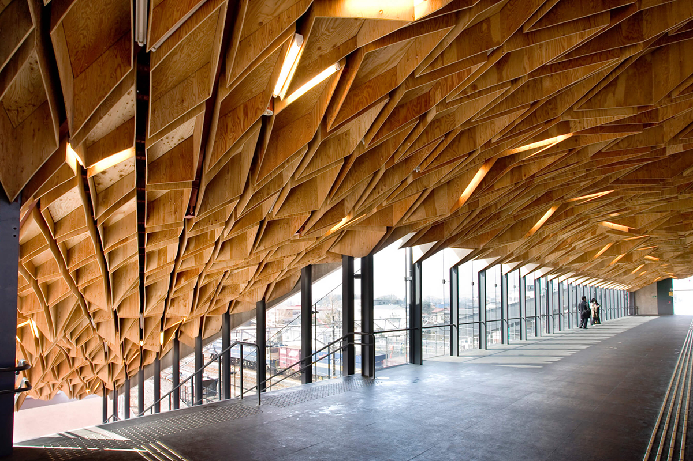
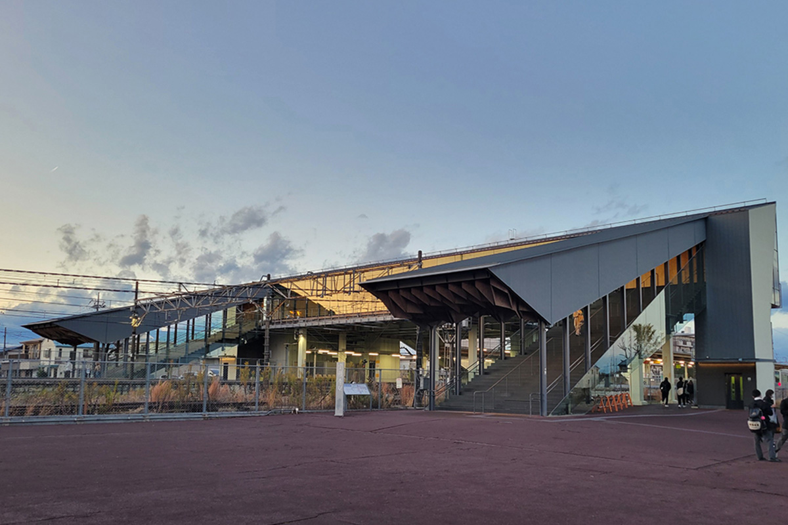
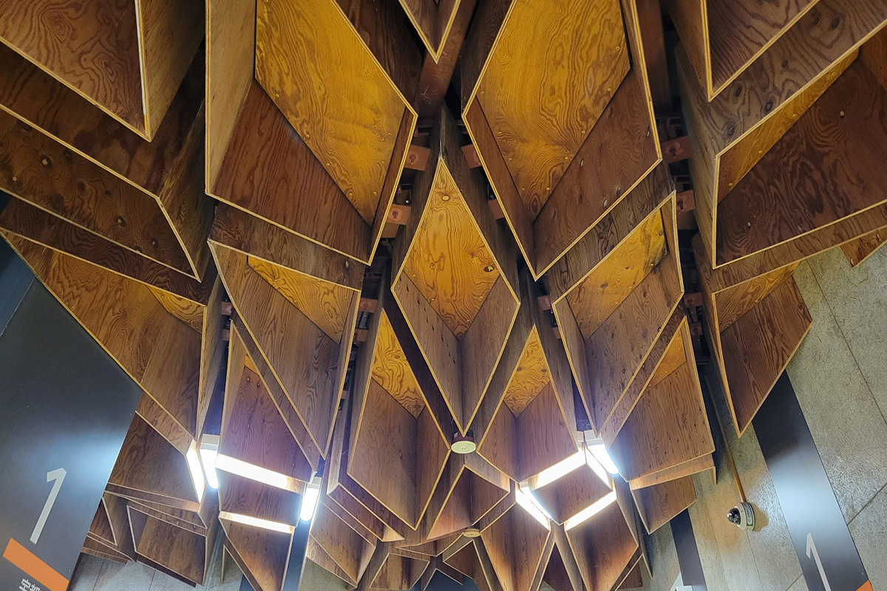

Префектура Тотиги · Хосякудзи · архитектура
Станция Хосякудзи: деревянный потолок Кэнго Кумы на линии Тохоку

Ради станции Хосякудзи стоит сойти с поезда посреди пути. Обычная пригородная остановка в префектуре Тотиги в 2008 году получила здание по проекту Кэнго Кумы, и его деревянный потолок хочется разглядывать дольше, чем ждать следующего поезда.
Дорога
Линия Тохоку от Токио до Мориоки
Главная линия Тохоку соединяет Токио с Мориокой, городом на севере острова Хонсю, и тянется на 572 километра. Это главная железнодорожная артерия северо-востока Японии: по ней ходят и обычные электрички, и туристические поезда с собственным характером, например SATONO.
Одна японская актриса, большая любительница местных линий, выбирает поезда не только ради пейзажей за окном, но и ради дизайна вагонов и станций. На линии Тохоку её интересует прежде всего станция Хосякудзи.
«Мне любопытна станция, которую придумал архитектор Кэнго Кума. Хочется просто стоять под геометрическим деревянным потолком и ни о чём не думать»
актриса, любительница местных линий
Архитектура
Станция под деревянными кессонами
Станция Хосякудзи находится в уезде Сиоя префектуры Тотиги. В 2008 году её здание полностью обновили по проекту Кэнго Кумы, японского архитектора с мировым именем. Новый вокзал получил деревянный кессонный потолок и большие застеклённые проёмы, поэтому внутри светло.

Кессоны здесь не похожи на ровную решётку классического потолка. Деревянные панели сложены в ромбы и треугольники и будто ссыпаются сверху, а между ними спрятаны светильники. Днём в галерею льётся свет из больших окон, а вечером тёплым светом горит само дерево.

Как добраться
Из Токио по линии Уцуномия
На участке от Токио до Уцуномии и дальше на север главную линию Тохоку называют линией Уцуномия, и Хосякудзи стоит на ней чуть севернее Уцуномии, столицы префектуры. Станция к тому же узловая: отсюда начинается местная линия Карасуяма. Удобно доехать до Уцуномии и пересесть на поезд линии Уцуномия или Карасуяма.
Станция Хосякудзи
- Адрес
- префектура Тотиги, уезд Сиоя, Таканэдзава, Хосякудзи
- Как добраться
- линия JR Уцуномия (главная линия Тохоку) или линия JR Карасуяма, станция Хосякудзи
- Сайт
- jreast.co.jp
Фото: JR East.